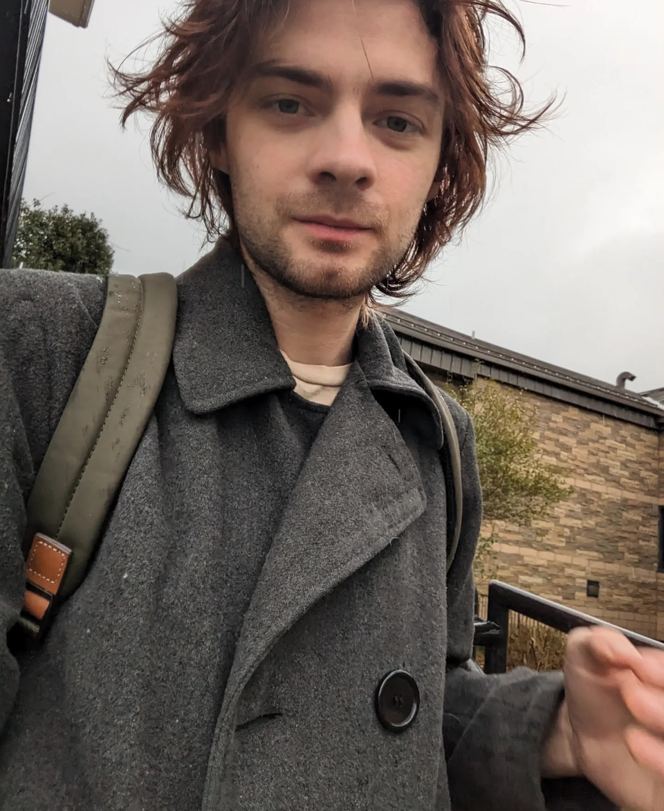
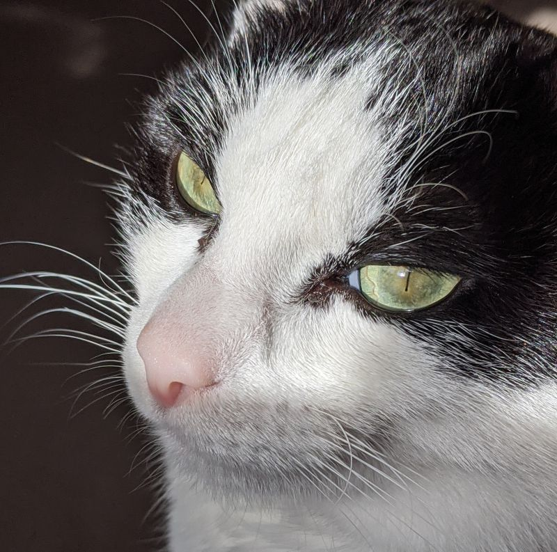

About


Human person in love with art and information, history and humanity, Earth and space, the sun and the wind, fiction and reality, liberty and equality, lists and graphs, charts and maps, taxonomies and systems, films and music, cooking and eating, pets and other living beings, running and climbing, driving and physical labor, coding and gaming, writing and researching, thinking and analyzing, discussing and persuading, hooting and hollering, meditating and journaling, drinking water, being useful, sleeping and dreaming, and my cat, Owen.
I'm finishing a computer science degree at Appalachian State, graduating in December 2026 with a data science certificate. My work is mostly backend and data engineering.
Recent projects have included a cloud-deployed service that pulls and reconciles video game review data from three different APIs, a machine learning pipeline that classifies building damage from post-hurricane drone imagery, and a 2D platformer built in Godot.
I also write essays, mostly about history, literature, and civil liberties. Did I mention I love systems?